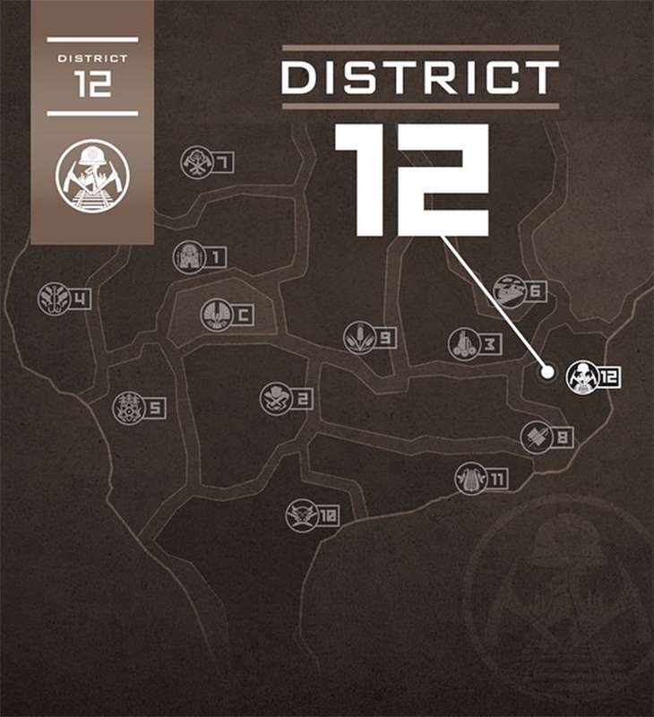

Curiosidades
1°- A começar por uma curiosidade de Josh Hutcherson! O ator nascido em 12 de outubro de 1992, que na época já era conhecido por filmes como ABC do Amor e Viagem ao Centro da Terra, contou que para viver Peeta Mellark precisou ganhar seis quilos em músculo com a ajuda de exercícios e uma dieta rígida!
2°- Quem também precisou passar por treinos específicos foi Jennifer Lawrence! Para interpretar a arqueira, a atriz passou por um extenso treinamento em tiro com arco com a atleta olímpica Khatuna Lorig - e ficou incrivelmente boa no esporte! Para a W Magazine, a atriz disse: - Eu não tenho muitos talentos. Não sou uma boa cozinheira, não sei limpar e não sei costurar. A única coisa que faço bem é atirar com arco e flecha. Eu amo tiro com arco. Poderia matar alguém com um arco e flecha se essa pessoa ficasse bem parada!
3°- Você sabe o que Haymitch Abernathy e Plutarch Heavensbee têm em comum? A princípio pode parecer que a resposta é: absolutamente nada. Enquanto Haymitch começou a saga como um Vitorioso que era viciado em bebida e acabou se afeiçoando a Katniss e Peeta mesmo com seu jeito agressivo e teimoso, Plutarch sempre se mostrou um personagem calmo e calculista, que soube tirar grande proveito das ações de Katniss no último filme. A resposta, no entanto, é associada aos atores que viveram esses personagens: Woody Harrelson, que interpretou Haymitch, e Philip Seymour Hoffman, que viveu Plutarch, nasceram na mesma data, dia 23 de julho! A coincidência só não é maior porque Woody nasceu em 1961, sete anos antes que Philip, nascido em 1967. Quem diria, não é mesmo?
4°- Em junho de 2020, a autora Suzanne Collins lançou o mais novo livro da saga, A Cantiga dos Pássaros e das Serpentes, uma prequel que se passa 64 anos antes da trilogia original. O livro conta a história da juventude de Coriolanus Snow antes do personagem se tornar o poderoso Presidente Snow. Aos 18 anos de idade, ele é apenas um rapaz da Capital que está animado por ter sido contratado para ser mentor na 10ª edição dos Jogos, mas fica completamente desapontado ao descobrir que deverá treinar uma garota do Distrito 12, o mais pobre e com menos chances de vencer. O livro também explica em mais detalhes como foram os Dias Escuros, guerra civil entre a Capital e os Distritos que deu origem aos Jogos - além de nos deixar com uma impressão totalmente diferente do tão cruel Presidente Snow.
5°- E por falar no Presidente Snow, você sabia que Donald Sutherland, o intérprete do personagem nos livros, queria tanto dar vida ao vilão que mandou um e-mail bem longo para o diretor do primeiro filme, Gary Ross, explicando por que deveria ser escolhido para o papel? A tática de Donald deu tão certo que ele não só conseguiu interpretar Snow, como também aumentar a importância do personagem! Enquanto nos livros ele só aparece quando interage com Katniss, os filmes contam com várias cenas extras dele em sua mansão e conversando com os Idealizadores dos Jogos.
6°- Assim que Jogos Vorazes foi lançado, muitas pessoas viram semelhanças entre o livro e o universo dos reality shows - e isso foi proposital! De acordo com Suzanne Collins, a ideia para a história de Katniss surgiu quando ela estava passando por canais da televisão e mudou de um reality para um telejornal exibindo imagens em tempo real da Guerra no Iraque. Em entrevista para a editora Scholastic, a autora disse: - Essas duas coisas começaram a se fundir de uma forma muito perturbadora. Acho que este foi o momento em que tive a ideia para a história de Katniss. Fã de mitologia, outras inspirações de Suzanne para Jogos Vorazes foram a lenda grega de Teseu e o Minotauro e as histórias de gladiadores.
7°- Mas afinal de contas, onde fica Panem? Apesar dos livros deixarem claro que o país se encontra no que antigamente era a América do Norte, não há muita informação sobre o local exato em que cada Distrito se encontra. Durante muitos anos, vários fãs teorizaram sobre o assunto, e a especulação mais aceita era a de que a Capital se encontrava onde hoje em dia é o estado de Denver, no Colorado. A resposta definitiva só veio em 2015, quando o perfil oficial de Jogos Vorazes no Instagram publicou a foto abaixo em suas redes sociais.
8°- Assim como Katniss, Jennifer Lawrence é super empoderada, e desde o início esteve muito preocupada em passar uma imagem positiva para as garotas com sua personagem. Em entrevista para a Sci Fi Now, ela contou que bateu o pé para que não a fizessem emagrecer demais para o papel - os próprios produtores argumentavam, na época, que a Katniss deveria ser bem magra, já que ela vem de um distrito pobre e com escassez de alimentos. Jennifer disse: - Esta é uma pessoa que garotas jovens - bom, todas as mulheres, mas principalmente garotas jovens - irão se inspirar e querer parecer com ela, e nós temos controle sobre isso, então por que não fazê-la forte? Por que não fazê-la linda, saudável e em forma? Eu fui muito inflexível em relação a isso.
9°- Já a transformação de Sam Claflin foi ainda mais extrema para interpretar Finnick Odair a partir de Em Chamas. Além do treino intenso, ele ainda precisou descolorir os cabelos e fazer bronzeamento artificial para ficar com o aspecto do personagem, que vive no litoral de Panem.
10°- Jogos Vorazes é uma das adaptações cinematográficas mais fiéis aos livros - no entanto, ainda assim existem algumas diferenças bem grandes entre os dois. A principal delas tem a ver com o broche de tordo de Katniss. Enquanto no filme ele lhe é dado por Greasy Sae, uma senhora que trabalha no mercado clandestino, nos livros quem presenteia Katniss com o símbolo é Madge, a única amiga mulher da personagem. Mais tarde, ela descobre que o broche pertencia a Maysilee Donner, tia de Madge que morreu na 50ª edição dos Jogos Vorazes - a mesma em que Haymitch saiu vitorioso.
11°- Outra diferença é que, no primeiro filme, Peeta perde a perna! O personagem leva um golpe de Cato, e Katniss faz um torniquete no machucado, o que salva a vida do rapaz, mas faz com que ele acabe com o membro amputado e tendo que usar uma prótese. Nos filmes, no entanto, esse plot não existe.
12°- Jennifer Lawrence é uma das celebridades mais divertidas da atualidade, e seus colegas de elenco possuem uma série de histórias engraçadas dela para contar. Durante o programa Tonight Show With Jimmy Fallon, Liam Hemsworth contou que as cenas em que precisava beijar a atriz eram as mais desconfortáveis, pois ela fazia questão de comer alimentos que davam mau hálito! - Sempre que eu precisava beijar Jennifer era bem desconfortável. Quando você olha de fora parece incrível, e ela é uma das minhas melhores amigas, eu a amo. Mas sempre que tínhamos uma cena de beijo ela comia alho, atum ou algo nojento bem antes da cena. Ela dizia algo: Então, eu comi alho e não escovei os dentes.
13°- Vários membros da equipe de Jogos Vorazes também revelaram que, durante as gravações do primeiro longa, havia um jarro de palavrões no set em que os atores deveriam colocar dinheiro sempre que dissessem algo impróprio. E adivinha quem mais contribuiu? Isso mesmo, Jennifer Lawrence!
14°- Mas não foi só Jennifer que protagonizou momentos engraçados com seus colegas de elenco durante a saga. Apesar de atuar com Liam Hemsworth em Jogos Vorazes e Em Chamas, foi só durante a turnê de divulgação do segundo filme que Woody Harrelson descobriu que o ator é irmão mais novo de Chris Hemsworth, o Thor! E o melhor: tudo isso aconteceu no meio de uma entrevista, e nem o repórter conseguiu segurar o riso.
15°- Lembra da cena do elevador de Em Chamas, quando Johanna Mason tira a roupa e fica pelada na frente de Peeta e Haymitch? Ela foi gravada em um hotel em funcionamento e aberto ao público, e em uma das tomadas o elevador acabou abrindo para um hóspede, que viu a atriz Jena Malone como veio ao mundo!